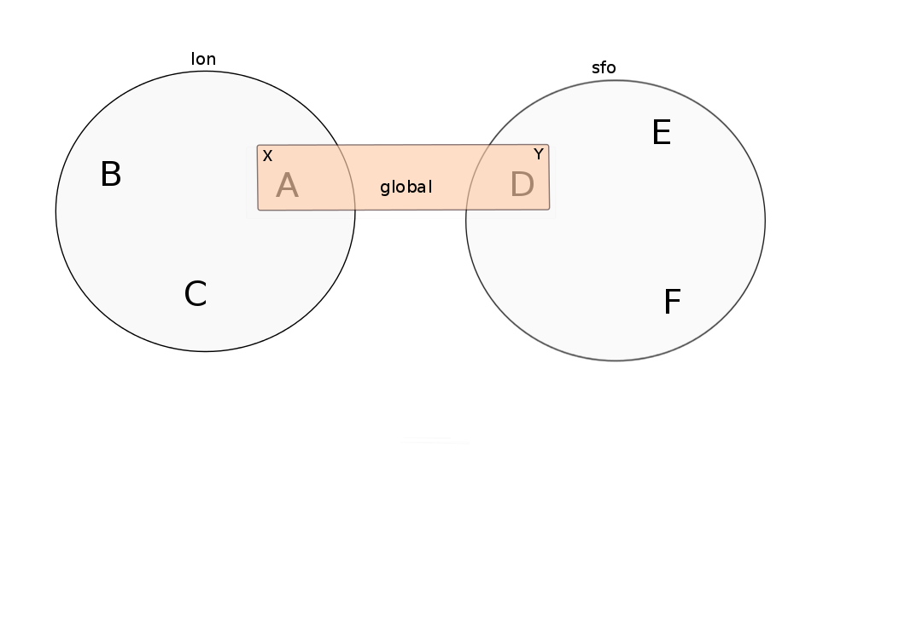

public Message setFlag(Flag ... flags);Advanced topics
Bela Ban belaban@yahoo.comMessage flags
- Message flags are used to override default behavior provided by the protocols in a stack
Examples:
- Mark a message as OOB (out-of-band) to deliver multiple messages from the same sender concurrently
- Skip the flow control protocols
- The advantage of tagging messages is that we don’t need to change the configuration, but instead can override it on a per-message basis.
- API:
- Example:
Message msg=new Message(null, "hello").setFlag(Message.Flag.OOB).name("A");Provided message flags
- Message.OOB
-
Marks a message as out-of-band. OOB messages don’t not provide any ordering guarantees, although they’re are reliable (no loss) and are delivered only once.
- Message.DONT_BUNDLE
-
Causes the transport not to bundle the message, but to send it immediately.
- Message.NO_FC
-
Bypasses any flow control protocols.
- Message.NO_RELIABILITY
-
Bypasses reliable protocols; makes the message unreliable. An unreliable message has no ordering constraints, may get dropped or delivered multiple times.
- Message.NO_TOTAL_ORDER
-
If we use a total order configuration with
SEQUENCER, then we can bypassSEQUENCER(if we don’t need total order for a given message) by tagging the message withNO_TOTAL_ORDER. - Message.RSVP
-
When this flag is set, a message send will block until the receiver (unicast) or receivers (multicast) have acked reception of the message, or until a timeout occurs.
- Message.DONT_LOOPBACK
-
When set, a message is multicast, but not looped back up the stack. Useful when a sender doesn’t want to receive its own multicast.
Note that this is a transient flag, soMessage.setTransientFlag()has to be used instead ofMessage.setFlag()
Regular and OOB messages
Regular messages are ordered as follows
- Messages from sender P are delivered sequentially, in the order in which P sent them
Messages from different senders are delivered in parallel
- When P sends P1 → P2 → P3, P1 is delivered first, then P2, then P3
- P3 has to wait until both P1 and P2 have been processed
Messages from sender Q are delivered in parallel to P’s messages
- Make sure your
receive()callback is reentrant
- Make sure your
However, OOB messages completely ignore any ordering constraints of the stack
- A message marked as OOB is processed by the OOB thread pool, not the regular thread pool (see below)
When P sends P1 → P2 → P3, then all 3 messages are delivered randomly (but only once !)
- Whether all 3 messages are really delivered in parallel also depends on the config of the OOB thread pool
The transport
- Bottom most protocol in the stack
- Serializes messages and sends them as UDP datagram packets, or over a TCP connection
- Receives packets and de-serializes them into messages, which are then passed up the stack
4 thread pools for handling of incoming messages
- Regular thread pool
- OOB thread pool
- Internal thread pool
- Timer thread pool
- All thread pools can be configured (e.g. min/max threads)
- The thread pools can be replaced with custom thread pools
- The thread factories can also be replaced
- The transport also manages all sockets (UDP or TCP)
Available transports
- Currently
UDPandTCP UDP uses IP multicasting
A message to N cluster nodes is sent once, as a datagram packet to a multicast (class D) address
- Class D addresses:
224.0.0.1-239.255.255.255(224.0.0.xreserved for host / router pings)
- Class D addresses:
- The switch copies the packet to all ports which have multicast group members
- This can be turned off by setting
ip_mcasttofalseinUDP
TCP uses N-1 TCP connections; 1 connection per destination
A message to N cluster nodes is sent N-1 times
- This generates a lot of traffic
- 1 thread per connection
Recommendation: don’t use TCP for large clusters, or clusters with a lot of traffic
But: I’ve run a 1000 node TCP cluster on Google Compute Engine… :-)
The transport

- UDP: 1 receiver thread for unicast datagram packets, 1 thread for multicast packets
TCP: 1 thread per connection model; ie. in a 100 node cluster, we have 99 connection receiver threads in a node
- In 4.0, NIO.2 will be used to manage all TCP connections with a configurable pool of threads
A receiver thread receives a network packet and - depending on the type - passes it to the right thread pool
The pool performs
- Version checking (drops packets with different version)
- Deserializes the buffer into a
Message - Passes the message (or message batch) up through the protocol stack all the way to the channel
Thread pools
- Regular
-
Handles regular messages (non-OOB, non-internal)
- OOB
-
Handles OOB messages
- Internal
-
Handles
INTERNALmessages. Reserved for use by JGroups. Needed to deliver some important messages by JGroups protocols (e.g. heartbeats in failure detection), without potentially blocking on user messages. - Timer
-
Used to execute tasks (periodic or one-time), e.g. retransmission, expiry of connection pools, stability etc
Processing regular messages

Processing OOB messages

Configuration of thread pools
- All pools need to implement
java.util.concurrent.Executorand the default implementations usejava.util.concurrent.ThreadPoolExecutor - The configuration of a thread pool is done with properties of the form <pool_name>.<attr>,
e.g.
oob_thread_pool.min_threads. The pool names arethread_pool(regular),oob_thread_pool,internalandtimer - The following attributes are used:
| Name | Function |
|---|---|
enabled |
If false, the thread pool is not enabled: when a message is received, it is passed up the stack by the receiver thread |
min_threads |
The min number of threads |
max_threads |
The max number of threads |
keep_alive_time |
Time (ms) after which an idle thread should be returned to the pool |
queue_enabled |
Whether or not a thread pool should have a queue enabled |
queue_max_size |
The max size of a queue (if enabled) |
rejection_policy |
The rejection policy. One of |
Thread pool behavior
- Semantics are the same as for
ThreadPoolExecutor: on submission of a task: - If we have fewer than
min_threads→ create an additional thread Else:
- If a queue is enabled and not full → queue the task
- Else create an additional thread if we’re below
max_threads
If the queue is full (or disabled) or we’ve reached
max_threadsand all threads are busy → consult the rejection policy- run
-
Pass the message up on the receiver’s thread. If there’s a risk that the thread might block, or take a long time, this hampers the ability of the receiver to quickly remove packets and might thus lead to queue overflow (or a 0 TCP write window, blocking the sender)
- discard
-
Discard the message. JGroups retransmission will later retransmit the message, but dropping a message is good as it tells the sender to slow down a bit (via the flow control protocols)
- abort
-
same as discard, but throw an exception
- discardoldest
-
Discards the oldest message first
Thread pool use
An OOB message uses 1 thread which passes it all the way up to the channel and to the application (see Transport)
- If the application sends another message (or invokes an RPC) on the same thread, that incoming thread can be busy for quite a while
A regular message is passed up to the reliable protocol (either NAKACK for mcasts or UNICAST for unicasts)
- The message is then added to a table
- If there’s no other thread busy removing messages from the table → Set a CAS and remove as many messages as possible and pass them up
- Else return (thread is ready to process other messages)
- Most threads will only add their message (or message batch) to the table and return
Recommended configs
| Pool | Recommendation |
|---|---|
OOB |
No queue → OOB messages are executed on a thread or dropped. |
Regular |
Queue is enabled and quite large, to handle message peaks. |
Internal |
Leave the default config (min=2,max=4), don’t touch |
Timer |
Defaults (min=2,max=4,small queue) should be sufficient |
Lab: advanced 1
- Run one instance of
bin/advanced.sh - Press
[1] start - The first RPC takes 1s, the second 2s, then 3s, 4s, 5s.
- All subsequent RPCs take 5s. Why ?
Explanation 1
min=2,max=8, large queue: we will always only have 2 threads handling incoming messages- 5 threads are invoking blocking RPCs: max of 5 incoming requests at any time
Thread-1:
- Takes message A1 and adds it to table-A in
NAKACK2 - Nobody’s currently delivering messages in table-A, so thread-1 removes A1 from table-A and delivers it → sleeps 1s in app code
- When done, thread-2 (below) already added more messages, so thread-1 removes and delivers all other messages in turn
- Takes message A1 and adds it to table-A in
Thread-2
- Takes A2 and adds it to table-A
- Sees that thread-1 is already delivering messages, so thread-2 returns and takes the next message
- All other 3 messages are added to table-A by thread-2 before thread-1 returns
- Regular messages from the same sender are delivered in the order in which they were sent
- Message
A5sent by a sender thread in A has to wait until messagesA1-A4have been delivered: takes 4 * 1s - To dump the messages in the table:
probe.sh jmx=NAKACK2.xmit_table_undeliveredPossible fixes
Fix 1: use OOB messages (see below)
- Press
'o'to switch toOOBRPCs - Each message now takes 1s to process
- However, messages are delievered in random order (no FIFO-per-sender anymore)
- Press
Fix 2: use the asynchronous invocation API (see below)
- Reduced thread use in the regular and OOB pools, but more use of the application’s thread pool
Lab: advanced 2
- Run 3 instances of
bin/advanced.sh - Start all of them
- RPCs take more than 5s. Why ?
Explanation 2
- We only have 2 threads handling 15 incoming messages
- The 2 processing threads are almost always stuck in
sleep() - The other (13) messages are added to the queue → which is growing:
[mac] /Users/bela/workshop/bin$ ./probe.sh jmx=UDP.regular_|grep regular
UDP={regular_queue_size=23, regular_pool_size_active=2, regular_pool_size=2}
UDP={regular_queue_size=25, regular_pool_size_active=2, regular_pool_size=2}
UDP={regular_queue_size=22, regular_pool_size_active=2, regular_pool_size=2}Sender could be starved for processing, e.g. if we have a queue:
A1→A2→B1→A3→A4→B2→C1:- (Thread T1 and T2)
- Sec 1:
A1is processed by T1,A2is added to table-A by T2,B1is processed by T2 - Sec 2:
A2is processed by T1,A3andA4are added to table-A by T2,B2is processed by T2 - Sec 3:
A3is processed by T1,C1is processed by T2 - Sec 4:
A4is processed by T1
C1starts processing after ~ 2 s
Possible fixes
- Same as in lab 1
- Increase
UDP.thread_pool.min_threadsto 4 (in the running system, or the config, but the latter requires a restart):
probe.sh op=UDP.setThreadPoolMinThreads[4]3 threads are busy processing
sleep()- 1 thread takes all other incoming messages and adds them to the respective tables
Downside: this will increase the tables sizes
- Resulting queue and pool sizes:
[mac] /Users/bela/workshop/bin$ ./probe.sh jmx=UDP.regular_|grep UDP
UDP={regular_queue_size=0, regular_pool_size_active=3, regular_pool_size=4}
UDP={regular_queue_size=0, regular_pool_size_active=3, regular_pool_size=4}
UDP={regular_queue_size=0, regular_pool_size_active=3, regular_pool_size=4}- The block times are now back to 5s
Lab: advanced 3
- Run 3 instances of
bin/advanced.sh - Start all of them
- Press
[o]to useOOBRPCs - RPCs take more then 1s. Why?
Explanation 3
The OOB thread is configured as follows:
min=1,max=8, no queue- Will create up to 8 threads to handle the 15 incoming messages
- 8 threads are almost always in
sleep() The other 7 messages are discarded (
rejection_policy="discard")- They will get retransmitted
[mac] /Users/bela/workshop/bin$ ./probe.sh jmx=UDP.oob_pool,oob_queue|grep UDP
UDP={oob_pool_size=8, oob_queue_size=0, oob_pool_size_active=8}
UDP={oob_pool_size=8, oob_queue_size=0, oob_pool_size_active=7}
UDP={oob_pool_size=8, oob_queue_size=0, oob_pool_size_active=7}- Retransmit requests:
mac] /Users/bela/JGroups$ probe.sh jmx=NAKACK2.xmit_r|grep xmit_r
NAKACK2={xmit_rsps_sent=11, xmit_reqs_received=11, xmit_rsps_received=7, xmit_reqs_sent=8}
NAKACK2={xmit_rsps_sent=9, xmit_reqs_received=9, xmit_rsps_received=9, xmit_reqs_sent=10}
NAKACK2={xmit_rsps_sent=9, xmit_reqs_received=9, xmit_rsps_received=13, xmit_reqs_sent=13}Possible fixes
- Increase
UDP.oob_thread_pool.max_sizeto 15:
probe.sh op=UDP.setOOBThreadPoolMaxThreads[15]- Now each request takes ~ 1s again
Asynchronous invocation API
- A method invoked in an RpcDispatcher is dispatched to application code
by calling method handle from
RequestHandler:
public interface RequestHandler {
Object handle(Message msg) throws Exception;
}- In the case of RpcDispatcher, the
handle()method converts the message’s contents into a method call, invokes the method against the target object and returns the result (or throws an exception). The return value is then sent back to the sender of the message. - The invocation is synchronous, ie. done on the thread responsible for dispatching this particular message from the network up the stack all the way into the application. The thread is therefore busy for the duration of the method invocation.
- If the invocation takes a while, e.g. because locks are acquired or the application waits on some I/O, another thread will be used for a different request. This can quickly lead to the thread pool being exhausted or many messages getting queued if the pool has an associated queue.
- Therefore a new way of dispatching messages to the application was devised; the asynchronous invocation API
- A new interface
AsyncRequestHandler(derived fromRequestHandler) is introduced
AsyncRequestHandler
public interface AsyncRequestHandler extends RequestHandler {
void handle(Message request, Response response) throws Exception;
}AsyncRequestHandleradds an additional method taking a request message and aResponseobject.- The request message contains the same information as before (e.g. a method call plus args)
Responseis used to send a reply at a later time, when processing is done.
public interface Response {
void send(Object reply, boolean is_exception);
}Responsehas information about the request (e.g. request ID and sender), and has methodreply()to send a response. Theis_exceptionparameter should be true if the reply is an exception, e.g. was thrown whenhandle()ran application code.- The advantage of the new API is that it can be used asynchronously. The default implementation uses a synchronous invocation:
public void handle(Message request, Response response) throws Exception {
Object retval=handle(request);
if(response != null)
response.send(retval, false);
}- Method
handle()synchronously calls into application code and returns a result, which is sent back to the sender of the request.
Use of the asynchronous invocation API
- An application can subclass
RpcDispatcher, or it can set a custom request handler viasetRequestHandler(), and implementAsyncRequestHandler.handle()by dispatching the processing to a thread pool. - The thread handling the request from will immediately be released and can be used to process other messages.
- The response will be sent when the invocation of application code is done, and thus the thread is not blocked on I/O, or trying to acquire locks or anything else that blocks in application code.
- To set the mode which is used, method
RpcDispatcher.asyncDispatching(boolean)can be used. This can be changed even at runtime, to switch between sync and async invocation style. - Asynchrounous invocation is typically used in conjunction with an application thread pool. The application knows (JGroups doesn’t) which requests can be processed in parallel and which ones can’t.
- Benefit: request dispatching (and ordering !) is now under application control
Example of where asynchronous invocation makes sense: replicated web sessions
- If a cluster node A has 1000 web sessions, then replication of updates across the cluster generates messages from A.
- Because JGroups delivers messages from the same sender sequentially, even updates to unrelated web sessions are delivered in strict order.
With asynchronous invocation, the application could devise a dispatching strategy which assigns updates to different (unrelated) web sessions to any available thread from the pool, but queues updates to the same session, and processes those by the same thread, to provide ordering of updates to the same session.
- This would speed up overall processing, as updates to a web session 1 on A don’t have to wait until all updates to an unrelated web session 2 on A have been processed.
Lab: advanced 4
- Run
bin/advanced.sh -use_async_handler Run
jconsoleand observe attributes ofadvanced:advanced-obj- Alternative:
probe.sh adv - The app-thread-pool’s size is 5
- Note that the regular thread pool’s size is 0 !
- Alternative:
So what happened ?
- The thread delivering a message returns immediately because the
AsyncRequestHandlerprocesses the message in a separate thread JGroups considers returning as delivered
- This allows the thread to grab the next message
- The caller still blocks until it receives the response
- Note that the order of messages is now defined by the application thread pool
- The thread delivering a message returns immediately because the
Message batching
For historic reasons, term message bundling is used on the sender, batching on the receiver
- Let’s use the term batching only
When sending many smaller messages, it is better to queue them and send them as a message batch
- Payload / header ratio is better (e.g. payload of 5, header of 30 !)
- Simple sender algorithm:
LOOP(while there are messages pending for destination D):
- If the message batch size for D is < max bundle size: add the message to the batch
- Else: send the batch, create a new batch for D and add the message
ENDLOOP
- Send batch if size > 0- This collects many messages into a batch until the
max_bundle_sizehas been reached, but sends individual messages immediately - E.g. message P1-5 are sent at time T1, and P6 at time T20: this create a batch for P1-5 and a single message for P6
- Message batching can be overridden with flag
DONT_BUNDLE
Message batching on the receiver
- On the receiver, we create instances of
MessageBatchfor batches (one for each destination) and pass the batches up rather than the individual messages Advantages:
- Multiple messages can be processed in one go
- Locks are acquired once for a batch (say of 10) rather than 10 times → less context switching
NAKACK/UNICAST: add N messages into the retransmission table in one step rather than N steps- The destination and sender addresses are sent only once rather than N times
Sending messages synchronously (RSVP)
While JGroups guarantees that a message will eventually be delivered at all non-faulty members, sometimes this might take a while
- We don’t know when a message has been delivered at all nodes
This can be changed by setting flag
Message.RSVPin a message- The send blocks until all members have acknowledged reception (or delivery) of the message (excluding members which crashed or left meanwhile).
If we send an
RSVPtagged message, then - whensend()returns - we’re guaranteed that all messages sent before will have been delivered at all members as well- If P sends messages 1-10, and marks 10 as
RSVP, then, uponJChannel.send()returning, P knows that all members received messages 1-10 from P.
- If P sends messages 1-10, and marks 10 as
NOTE: Since RSVP’ing a message is costly, and might block the sender for a while, it should be used sparingly. For example, when completing a unit of work (ie. member P sending N messages), and P needs to know that all messages were received by everyone, before sending other messages.
Configuration and use
- To use RSVP, two things have to be done:
- First, the
RSVPprotocol has to be in the config, somewhere above the reliable transmission protocols such asNAKACKorUNICAST, e.g.:
<config>
<UDP/>
<pbcast.NAKACK2 />
<UNICAST3 />
...
<RSVP />
</config>- Secondly, the message we want to get ack’ed must be marked as
RSVP:
Message msg=new Message(null, "hello world").setFlag(Message.RSVP);
ch.send(msg);Method
send()returns as soon as it has received acks from all current members- If there are 4 members A, B, C and D, and A has received acks from itself, B and C,
but D’s ack is missing and D crashes before the timeout kicks in, then this will
nevertheless make
send()return, as if D had actually sent an ack.
- If there are 4 members A, B, C and D, and A has received acks from itself, B and C,
but D’s ack is missing and D crashes before the timeout kicks in, then this will
nevertheless make
If the
timeoutproperty is greater than 0, and we don’t receive all acks withintimeoutmilliseconds, aTimeoutExceptionwill be thrown (ifRSVP.throw_exception_on_timeoutis true)- The application can choose to catch this (runtime) exception and do something with it, e.g. retry.
Non blocking RSVP
Sometimes a sender wants a given message to be resent until it has been received, or a timeout occurs, but doesn’t want to block. As an example,
RpcDispatcher.callRemoteMethodsWithFuture()needs to return immediately, even if the results aren’t available yet.- If the call options contain flag
RSVP, then the future would only be returned once all responses have been received. This is clearly undesirable behavior.
- If the call options contain flag
- To solve this, flag
RSVP_NB(non-blocking) can be used. This has the same behavior asRSVP, but the caller is not blocked by the RSVP protocol. When a timeout occurs, a warning message will be logged, but since the caller doesn’t block, the call won’t throw an exception.
Generating custom addresses
- Address generation is pluggable: an application can define what kind of
addresses it uses. The default address type is
UUID, and since some protocols use UUID, it is recommended to provide custom classes as subclasses of UUID. - This can be used to pass additional data around with an address, for example information about the location of the node to which the address is assigned
- To use custom addresses, an implementation of
org.jgroups.stack.AddressGeneratorhas to be written:
public interface AddressGenerator {
Address generateAddress();
}- For any class
CustomAddress, it will need to get registered withClassConfiguratorin order to marshal it correctly:
class CustomAddress extends UUID {
static {
ClassConfigurator.add((short)8900, CustomAddress.class);
}
}NOTE:
The ID should be chosen such that it doesn’t collide with any IDs defined in jg-magic-map.xml.
- Set the address generator in
JChannel: addAddressGenerator(AddressGenerator). This has to be done before the channel is connected.
Controlling view generation
- View generation is pluggable; application code can be called to determine how a new view is created
The first member of a view is always the coordinator
- The application can therefore pick the coordinator
Useful to
- Pin the coordinatorship to only certain beefy servers
- Make sure that only one of the previous coordinators becomes the new coordinator after a merge. This reduces the frequency at which the coordinator moves around and thus increases stability for singleton services (services which are started only on one node in a given cluster).
- To do this, interface
MembershipChangePolicyhas to be implemented
public interface MembershipChangePolicy {
List<Address> getNewMembership(Collection<Address> current_members,
Collection<Address> joiners,
Collection<Address> leavers,
Collection<Address> suspects);
List<Address> getNewMembership(Collection<Collection<Address>> subviews);
}- The first method is called to create a regular view:
current_membersis a list of the current members,joinersof new members,leaversof members which want to leave andsuspectsof members which have crashed - The second method accepts a list of membership lists; each list is a subview that needs to get
merged into a new
MergeView
Generating a MergeView
- For example, we could have
{A,B,C},{M,N,O,P}and{X,Y,Z}: - A, M and X are the respective coordinators of the subviews and the task of the code is to determine the single coordinator of the merged view.
The default implementation
- adds all subview coordinators to a sorted set,
- takes the first (say M), adds it to the resulting list and then
- adds the subviews in turn.
- This could result in a MergeView like
{M,A,B,C,N,O,P,X,Y,Z}. Ordering and duplicate elements
- In both regular and merge views, it is important that there are no duplicate members. It is
possible to get overlapping subviews in the case of a merge, for instance:
{A,B,C},{C,D}and{C,D}. This cannot result in C or D being present in the resulting merge view multiple times.
- In both regular and merge views, it is important that there are no duplicate members. It is
possible to get overlapping subviews in the case of a merge, for instance:
A
MembershipChangePolicycan be set inGMSvia propertymembership_change_policy, which accepts the fully qualified classname of the implementation ofMembershipChangePolicy.- There is also a setter
setMembershipChangePolicy()which can be used to set the change policy programmatically
- There is also a setter
Sample view generation
- The following example shows how to pin coordinatorship to a certain subset of nodes in a cluster.
- Beefy nodes need to be marked as such, and this is done by using a special address, generated by an
AddressGenerator:
if(beefy)
channel.setAddressGenerator(new AddressGenerator() {
public Address generateAddress() {
return ExtendedUUID.randomUUID(channel.getName());
}
});
}- First we check if the node that’s started needs to be marked as beefy. If so, we grab the current channel
and set an
AddressGeneratorwhich creates anExtendedUUID. - The
MembershipChangePolicynow knows if a node is beefy by checking if the node’s address is anExtendedUUID.
A sample MembershipChangePolicy
public List<Address> getNewMembership(Collection<Address> current_members,
Collection<Address> joiners,
Collection<Address> leavers,
Collection<Address> suspects) {
Membership retval=new Membership();
for(Address addr: current_members)
if(addr instanceof ExtendedUUID)
retval.add(addr);
for(Address addr: joiners)
if(addr instanceof ExtendedUUID)
retval.add(addr);
retval.add(current_members).add(joiners);
retval.remove(leavers).remove(suspects);
return retval.getMembers();
}- Beefy servers are at the head of a view. When a new beefy server joins, it should not become the new coordinator if the current coordinator already is a beefy server, but add itself to the end of the beefy servers, ahead of non-beefy servers.
- First we create a
Membership, which is an ordered list without duplicates. Then we iterate through the current membership and add the beefy servers to the list, followed by the beefy joiners. - After that, we add all other current members and joiners and remove suspected and leaving members.
Effect: while there are beefy servers in a view, the oldest beefy server will be the coordinator, then the second-oldest and so on.
- When no beefy servers are available, the oldest non-beefy server will be coordinator.
- When a beefy server joins again, it will become coordinator, taking the coordinatorship away from the previous non-beefy server.
Fork channels
A fork channel is a light-weight channel, forked off of a main channel (
JChannel)- Used as a private communication channel for a subsystem
- Additional protocols can be attached to a fork channel
- A fork channel only lives as long as the main channel lives
- Subclass of
JChannel; but some methods are not supported (e.g. state transfer)
- Can be created declaratively (at main channel creation time) or dynamically using the programmatic API
Use cases for fork channels:
- No need to configure a separate channel; use of an existing
JChannel(e.g. grabbed from Infinispan or WildFly) for private communication If we cannot for some reason modify the main stack’s configuration, we can create a fork channel and a corresponding fork stack and add the protocols we need to that fork stack. Example:
- An application needs a fork stack with
COUNTER(a distributed atomic counter) on top - To do so, it can create a fork stack with
COUNTERand a fork channel connecting to that stack, and it will now have distributed atomic counter functionality on its fork stack, not available in the main stack
- An application needs a fork stack with
- No need to configure a separate channel; use of an existing
Architecture of fork channels

- In the example, a main channel and 5 fork channels (in the same JVM) are shown
The brown stack to the left is the main stack and it has the main channel connected to it
- The
FORKprotocol needs to be present in the main stack, or else fork stacks can not be created - It has 2 fork stacks:
"counter"and"lock"
- The
The blue stack in the middle is a fork-stack with fork stack ID
"counter"- It adds protocol
COUNTERto the protocols provided by the main stack - Therefore a message passing down through fork stack
"counter"will pass through protocolsCOUNTER→FORK→MFC→GMS
- It adds protocol
Architecture of fork channels
- Fork channels have an ID, e.g.
"fork-ch1" - The combination of fork stack ID and fork channel ID is used to demultiplex incoming messages
If fork channel 2 sends a message, it’ll pass through
COUNTERand intoFORKFORKadds a header to the message, containingfork channel ID="fork-ch2"andfork stack ID="counter"- Then the message passes down the main stack, through
MFC,GMSand so on
When the message is received, it passes up the reverse order:
GMS→MFC→FORK- If there is no header,
FORKpasses the message up the main stack, where it passes throughFRAG2and ends up in the main channel - If a header is present, the fork stack ID is used to find the correct fork-stack (
"counter"). - The message then passes through
COUNTER - Finally, the fork channel ID (
"fork-ch2") is used to find the right fork channel and the message is passed to it
- If there is no header,
Fork channels sharing the same fork stack also share state
- For example, fork channels
fork-ch1andfork-ch2shareCOUNTER, which means they will see each other’s increments and decrements of the same counter - If fork stack
"lock"also had aCOUNTERprotocol, andfork-ch1anffork-ch4accessed a counter with the same name, they would still not see each other’s changes, as they’d have 2 differentCOUNTERprotocols.
- For example, fork channels
FORK configuration
<FORK config="/home/bela/fork-stacks.xml" />FORKrefers to an external file to configure its fork stacks:
<fork-stacks xmlns="fork-stacks">
<fork-stack id="counter">
<config>
<COUNTER bypass_bundling="true"/>
</config>
</fork-stack>
<fork-stack id="lock">
<config>
<CENTRAL_LOCK num_backups="2"/>
<STATS/>
</config>
</fork-stack>
</fork-stacks>- File
fork-stacks.xmldefines 2 fork stacks:"counter"and"lock" Element
<config>is a regular JGroups configuration- For example, fork stack
"lock"creates a stack withCENTRAL_LOCKandSTATS
- For example, fork stack
- When
FORKis initialized, it will create the 2 fork stacks - Fork channels can pick one of the 2 existing fork stacks to be created over, or they can dynamically create new fork stacks
Creation of fork channels
- A fork channel is created by instantiating a new
ForkChannelobject:
JChannel main_ch, fork_ch; (1)
fork_ch=new ForkChannel(main_ch, "lock", "fork-ch4", (2)
new CENTRAL_LOCK(), new STATS());
main_ch.connect("cluster");
fork_ch.connect("bla"); (3)-
This is the main channel. Its stack may or may not contain
FORK, but for this example, we assume it is present. -
The fork channel is created. It is passed the main channel, the fork stack ID (
"lock") and the fork channel ID ("fork-ch4"), plus a list of already created protocols (CENTRAL_LOCKandSTATS). IfFORKalready contains a fork stack with ID="lock", the existing fork stack will be used, or else a new one will be created with protocolsCENTRAL_LOCKandSTATS. Then a new fork channel with ID="fork-ch4"will be added to the top of fork stack"lock". An exception will be thrown if a fork channel with the same ID already exists. -
The
ForkChannelnow callsconnect(), but the cluster name is ignored as fork channels have the same cluster name as the main channel they reference. The local address, name, view and state are also the same. Note that the main channel needs to be connected before any fork channel.
Dynamically inserting a FORK protocol
- The example above showed the simplified constructor, which requires the
FORKprotocol to be present in the stack. There’s another constructor which allows for FORK to be created dynamically if not present:
public ForkChannel(final Channel main_channel,
String fork_stack_id, String fork_channel_id,
boolean create_fork_if_absent,
int position,
Class<? extends Protocol> neighbor,
Protocol ... protocols) throws Exception;- In addition to passing the main channel, the fork stack and channel IDs and the list of protocols, this
constructor also allows a user to create
FORKin the main stack if not present. To do so,create_fork_if_absenthas to be set to true (else an exception is thrown ifFORKis not found), and the neighbor protocol (e.g.FRAG2.class) has to be defined, plus the position (ProtocolStack.ABOVE/BELOW) relative to the neighbor protocol has to be defined as well. - The design of FORK / ForkChannel is discussed in more detail in https://github.com/belaban/JGroups/blob/master/doc/design/FORK.txt
Relaying between multiple sites
- A site is a local cluster
RELAY2relays unicast and multicast messages between different sites- Each site is completely autonomous and knows nothing about different sites other than their names
- The coordinator of each site is the site master and is responsible for traffic relaying
Goals:
- Relay traffic between sites
- Send a unicast message to the site master of a given site
- Send back a response to a sender from a different site

RELAY2 configuration
- To use RELAY2, it has to be placed towards the top of the configuration, e.g.:
...
<FRAG2 />
<relay.RELAY2 enable_address_tagging="true" site="${site:lon}">
<RelayConfiguration>
<sites>
<site name="lon">
<bridges>
<bridge name="global" config="relay-global.xml"/>
</bridges>
</site>
<site name="sfo">
<bridges>
<bridge name="global" config="relay-global.xml"/>
</bridges>
</site>
<site name="nyc">
<bridges>
<bridge name="global" config="relay-global.xml"/>
</bridges>
</site>
</sites>
</RelayConfiguration>
</relay.RELAY2>- The
siteproperty gives the local site its name, used for routing between sites - Addresses contain site name, e.g. address
A1:LONin theSFOsite is not local, but will be routed to memberAin the remote siteLON. Property
relay_multicastsdetermines whether or not multicast messages (withdest==null) are relayed to other sites- When we have a site
LON, connected to sitesSFOandNYC, if a multicast message is sent in siteLON, andrelay_multicastsis true, then all members of sitesSFOandNYCwill receive the message
- When we have a site
Sites configuration
- Sites an be configured via the
configattribute, which points to an external XML file, or inline via the<RelayConfiguration>child element, as shown above - The example defines 3 sites
lon,sfoandnyc, connected with a global cluster"global"(defined inrelay-global.xml) - All inter-site traffic is sent via this global cluster
The above configuration can also be structured differently, ie. instead of a global cluster, we could define separate clusters between
lonandsfo, andlonandnyc- However, in such a setup,
nycandsfowouldn’t be able to send each other messages; onlylonwould be able to send message tosfoandnyc.
- However, in such a setup,
Relaying of multicasts
- If
relay_multicastsis true then any multicast received by the site master of a site will get forwarded to all connected sites - A recipient of a multicast message which originated in a different site will see that the sender’s
address is not a
UUID, but a subclass (SiteUUID) which is theUUIDplus the site suffix, e.g.A1:sfo When a reply is to be sent to the sender of the multicast message,
Message.getSrc()provides the target address for the unicast response message- This is also a
SiteUUID, but the sender of the response neither has to know this nor take any special action to send the response, as JGroups takes care of routing the response back to the original sender.
- This is also a
Relaying of unicasts
Relaying of unicasts is done transparently
- If we don’t have a dest address (e.g. as a result of reception of a multicast), there is a special address
SiteMaster(name)which identifies the site master for relaying of messages
- If we don’t have a dest address (e.g. as a result of reception of a multicast), there is a special address
Class
SiteMasteris created with the name of a site, e.g.new SiteMaster("lon")- When a unicast with destination
SiteMaster("lon")is sent, then the message is relayed to the current site master oflon - If the site master changes, messages will get relayed to a different node, which took over as site master from the old site master
- When a unicast with destination
Sometimes only certain members of a site should become site masters; e.g. the more powerful boxes (as routing needs some additional CPU power), or multi-homed hosts which are connected to the external network (over which the sites are connected with each other).
To do this,
RELAY2can generate special addresses which contain knowledge about whether a member should be skipped when selecting a site master from a view, or not- If
can_become_site_masteris set to false inRELAY2, then the selection process will skip that member - However, if all members in a given view are marked with
can_become_site_master==false, then the first member of the view will get picked
- If
When we have all members in a view marked with
can_become_site_master==false, e.g.{B,C,D}, thenBis the site master- If we now start a member
Awithcan_become_site_master==true, thenBwill stop being the site master andAwill become the new site master
- If we now start a member
Invoking RPCs across sites
- Invoking RPCs across sites is more or less transparent, except when we cannot contact a site
- If we want to invoke method
foo()inA1,A2(local) andSiteMaster("sfo"), we could write the following code:
List<Address> dests=new ArrayList<>(view.getMembers());
dests.add(new SiteMaster("sfo"));
RspList<Object> rsps;
rsps=disp.callRemoteMethods(dests, call,
new RequestOptions(ResponseMode.GET_ALL, 5000));
for(Rsp rsp: rsps.values()) {
if(rsp.wasUnreachable())
System.out.println("<< unreachable: " + rsp.getSender());
else
System.out.println("<< " + rsp.getValue() + " from " + rsp.getSender());
}- First, we add the members (
A1andA2) of the current (local) view to the destination set - Then we add the special address of the
sfosite master:SiteMaster("sfo") - Next, we invoke the call and block until responses from all
A1,A2andSiteMaster("sfo")have been received, or until 5 seconds have elapsed. Finally, we check the response list
- If a site is unreachable, a
Rsphas field"unreachable"set
- If a site is unreachable, a
Issues with invoking RPCs across different sites
- The above example added the local members and the site master of
sfotodests - This means the caller will block until a response from each of these 3 nodes has been received
- If site
sfohas 10 members, their responses will get dropped as they’re not in the destination list - So while we can invoke an RPC in all members of all sites, the responses from non-local sites will get dropped
To fix this, there are 2 alternatives:
- Add all nodes to
dests -
This is a problem since the view only shows members of the local site. A site-local membership could be maintained via application RPCs, but then this membership would have to be maintained whenever a member leaves or joins. New members would also have to learn the membership
- Use regular messages
-
Requests and responses could be marked specially, so the
receive()callback knows what to do. When a message marked as request is received, a response could be sent to the sender of the message. SeeChatDemofor details.
- Add all nodes to
Lab: relay demo
Goal
- Create 3 sites
lon,nycandsfo - Run 2
ChatDemoinstances in each site - Each message is sent to all members in all sites
- Each member replies with an
ackmessage
- Create 3 sites
- Note that each site needs to have a different site id, mcast_addr and mcast_port
- Run 2 nodes of each site:
bin/lon.sh -name lon1
bin/lon.sh -name lon2
bin/nyc.sh -name nyc1
bin/nyc.sh -name nyc2
bin/sfo.sh -name sfo1
bin/sfo.sh -name sfo2Handling network partitions (split brain)
- Cluster:
v4={A,B,C,D,E}(coord=A) Assume a switch connecting to members
{D,E}fails → network partition between{A,B,C}and{D,E}A,BandCcan ping each other, but notDorE, and vice versa
- JGroups detects this and creates 2 subclusters:
v5={A,B,C}(Aremains coordinator) andv5={D,E}(Dbecomes coord) - Clients may be able to access one or both of the partitions (or none)
When the partition heals, JGroups will merge the subclusters back into MergeView
v6={A,B,C,D,E}A MergeView has a list of all subviews (partitions)
- We know which members were part of which partition before the split healed
- However, JGroups won’t be able to merge the (possibly divergent) application data
Strategies for keeping application data consistent
- CAP: either CP or AP (P can never be forfeited as partitions do happen)
CP: consistency & partition handling
- System may not be available all the time
- jgroups-raft
AP: availability & partition handling
- Consistency not guaranteed all the time
- Eventual consistency: possibility to see stale data but eventual convergence of data
- Infinispan eventual consistency
Consistency and partition handling (CP)
Only a majority partition is allowed to perform reads and writes
The majority partition can also be defined differently as long as the decision is deterministic (only one majority partition), e.g.
- A given node needs to be present
Access to a given resource (e.g. DB)
- Whoever has access to the DB is allowed to write, others shut down or become read-only
- A minority partition rejects client access (stale reads might be allowed)
- Advantage: no merging of data
- Disadvantage: system unavailable when no majority
Example: primary partition handling
static final int majority=3;
boolean is_primary;
public void viewAccepted(View new_view) {
int size=new_view.size();
if(is_primary) {
if(size < majority) {
is_primary=false;
// go into read-only mode (or reject all requests)
}
}
else {
if(size >= majority) {
is_primary=true;
// 1. go into read-write mode
// 2. overwrite state with state from primary partition
}
}
}- A cluster becomes a primary partition as soon as it has
majoritymembers - A read-only, non-primary partition exists when the view size drops below
majoritymembers
Availability and partition handling (AP)
- All partitions are allowed to make progress (read-write)
- Partitions can diverge if the same data is modified in different partitions
- When the network partition heals, data has to be merged
Merge strategies:
- Timestamps, physical time, logical clocks
- Member precedence
Causal vectors (eventual consistency)
- Has to contact application if data collision cannot be resolved automatically
- Advantage: system is always available and accepts writes
- Disadvantage: merging data can be hard (and we may have to consult the application)
Writing a protocol
- Let’s write a simple protocol which prints the number of bytes for each sent or received message to stdout
- To do this, we have to extend
Protocol:
@MBean(description="A sample protocol printing the number of bytes of all received messages")
public class PRINT_BYTES extends Protocol {
protected static final short ID=2015;
static {
ClassConfigurator.addProtocol(ID, PRINT_BYTES.class);
}
@Property(description="Suppresses printing to stdout if false")
protected boolean do_print=true;
}- The
@MBeanannotation makes all attributes and operations available via JMX (see below) Each protocol has a unique ID, which needs to be registered
- The IDs of all JGroups protocols are defined in
conf/jg-protocol-ids.xml
- The IDs of all JGroups protocols are defined in
- There’s a property
do_printwhich can be set via configuration and JMX, e.g.<PRINT_BYTES do_print="false".../>
Methods to be overridden
- The table below lists the most important methods to be overridden by a protocol:
| Name | Description |
|---|---|
init() |
Called at initialization time, after all properties have been set from the config file |
start() |
Called on |
stop() |
Called on |
destroy() |
Called when a channel is closed ( |
down(Event) |
Called when an event (e.g. a message) is sent |
up(Event) |
Called when an event (e.g. a message) is received |
up(MessageBatch) |
Called when a message batch is received |
A few facts about protocols
- Each protocol has a neighbor above it (
up_prot) and below it (down_prot) Events are passed between protocols
An Event has a
typeandarg(Object)- E.g.
type=VIEW_CHANGE→arg=View type=MSG→arg=Message
- E.g.
Example: printing a view change
public Object down(Event evt) { (1)
switch(evt.getType()) { (2)
case Event.VIEW_CHANGE: (3)
View view=(View)evt.getArg(); (4)
System.out.println("view = " + view);
break;
}
return down_prot.down(evt);
}-
Intercepting a view change in the down direction
-
Switching based on the type of the event
-
Handling a view change
-
Getting the argument and casting it to a
View
Caveats
- GMS sends a
VIEW_CHANGEup and down If
PRINT_BYTESis above GMS, it won’t handle the view change- Need to handle
VIEW_CHANGEin the down and up direction
- Need to handle
Printing the sent messages
- To do this, we need to override
down():
case Event.MSG:
if(do_print) { (1)
Message msg=(Message)evt.getArg(); (2)
int num_bytes=msg.getLength(); (3)
if(num_bytes > 0)
System.out.printf("-- sending %d bytes\n", num_bytes);
}
break;-
Only print if
do_printis true -
Cast the event’s argument to
Message -
Message.getLength()returns the number of bytes of the message’s payload
Printing the received bytes
- We have to override methods
up(Event)andup(MessageBatch up(Event)is more or less the same code asdown(Event)up(MessageBatch):
public void up(MessageBatch batch) {
int total_bytes=0;
for(Message msg: batch)
total_bytes+=msg.getLength();
// alternative: total_bytes=batch.length();
System.out.printf("received batch of %d messages: total size is %d bytes\n",
batch.size(), total_bytes);
if(!batch.isEmpty())
up_prot.up(batch);
}Running the demo
- Add
PRINT_BYTEStoconfig.xml:
<UDP mcast_addr="228.5.5.5".../>
<org.lab.protocols.PRINT_BYTES do_print="true" />
<PING />
...- Note that the full classname of
PRINT_BYTEShas to be given - Run the demo:
bin/repl-cache.sh Extra credit
-
Maintain the number of sent messages / bytes in variables and expose them with
@ManagedAttribute - Disable and re-enable printing of messages via probe.sh
-
Print the headers (
Message.getHeaders()) -
Dynamically remove
PRINT_BYTESviaprobe.sh remove-protocol ...
-
Maintain the number of sent messages / bytes in variables and expose them with
Debugging
- Failure detection protocols depending on heartbeats should be disabled
Otherwise, stopping member P in a breakpoint for more than the failure detection timeout would suspect and exclude P
- Disable FD_ALL, FD
- FD_SOCK is fine
Simulation
JGroups ships with a number of protocols for simulation of
- Message drops:
DISCARD - Network partitions:
DISCARD(demo) - Duplicate messages:
DUPL - High latency:
DELAY - Message reordering:
SHUFFLE
- Message drops:
These are used in unit tests to test correctness of protocols
- Example:
DuplicateTest
- Example:
Byteman
- Adding behavior to a running JVM via dynamic byte code rewriting
- Even to a JVM that was started without a byteman agent (with
bminstall) - Dynamically install byteman rules (
bmsubmit), e.g. to print the bytes of sent / received messages - Byteman rules can be removed at runtime → no overhead
- Can be used even in production
Byteman demo
- Make sure
JAVA_HOMEis set or copytools.jarfrom the JDK toworkshop/lib - Run a ChatDemo, e.g.
./run.sh org.lab.ChatDemo -name A -props config.xml - Find out the Java process ID:
[mac] /Users/bela$ jps -l
70246 sun.tools.jps.Jps
70235 org.lab.ChatDemo- Install the byteman agent:
./bm-install.sh 70235 - Install the test rule:
./bm-submit.sh ../conf/byteman.btm - See that the rule is installed:
./bm-submit -l - Observe all events sent by the transport are printed
hello
--> MSG, arg=[dst: <null>, src: A (1 headers), size=6 bytes] (headers=NAKACK2: [MSG, seqno=1])
> [A]: hello
world
--> MSG, arg=[dst: <null>, src: A (1 headers), size=6 bytes] (headers=NAKACK2: [MSG, seqno=2])
> [A]: world
--> GET_PHYSICAL_ADDRESS, arg=A
--> MSG, arg=[dst: <null>, src: <null> (1 headers), size=0 bytes, flags=INTERNAL, transient_flags=DONT_LOOPBACK] (headers=MERGE3: INFO: view_id=[A|0], logical_name=A, physical_addr=127.0.0.1:63360)- Uninstall the rule:
./bm-submit -u
/